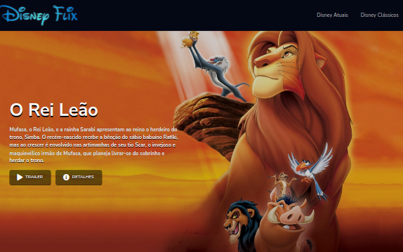
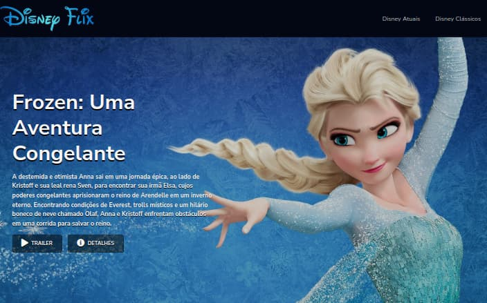
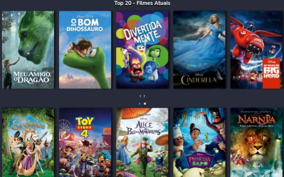

Projeto
DisneyFlix.



O projeto desenvolvido é um desafio para o Bootcamp Inter Frontend Developer da Digital Innovation One , cujo objetivo é recriar a interface da Netflix utilizando tecnologias simples como HTML5, CSS3 e JavaScript.
Informações
-
HTML5
É uma linguagem de marcação utilizada na construção de páginas na Web.
-
CSS3
Folhas de Estilo em Cascatas. Criado com o propósito de estilizar as paginas HTML
-
Javascript
É uma linguagem de programação interpretada estruturada, de script em alto nível com tipagem dinâmica fraca e multiparadigma.
-
Fontawesome
É um conjunto de ferramentas de fontes e ícones com base em CSS e LESS.
Funcionalidades
- Carousel criado através do plugin jQuery Owl
- Página Disney Atuais.
- Página Clássicos Disney.
- Modal com informações do filme selecionado.
- Layout responsivo